3Q'17 Conference Call Highlights
- Service Companies
- Upstream Companies
- Anadarko
- Apache Corporation
- Callon Petroleum
- Carrizo
- Centennial Resources
- Chevron
- Cimarex Energy
- Devon
- Diamondback Energy
- Encana Corporation
- Energen
- EOG Resources
- ExxonMobil
- Halcón Resources
- Jagged Peak Energy
- Laredo Petroleum
- Marathon Oil Corporation
- Matador Resources
- Murphy Oil
- Noble Energy
- Occidental Petroleum
- Parsley Energy
- PDC Energy
- Pioneer Natural Resources
- QEP Resources
- Resolute Energy
- RSP Permian
- SM Energy
- WPX Energy
Service Companies
Baker Hughes
- Completed first quarter after combining with General Electric; oilfield service revenue totaled ~$2.6 billion, up 4% sequentially.
- Expect rig activity to stay flat through the end of the year.
- Service market continues to improve, although at a decelerating pace compared to 2Q’17.
Halliburton
- Total company revenue was $5.4 billion, representing a 10% increase from 2Q’17.
- Generated ~$1.1 billion in operating cash flow.
- North American sequential revenue growth increased by 14%.
- Completion and Production revenue sequential growth increased by 13% primarily due to improved utilization and pricing.
- Completions market remains tight in North America, continuing to push pricing across all portfolio segments.
- Fleet is sold out for the remainder of the year and into 2018.
- Total sand volume in the third quarter increased compared to the previous quarter; however proppant per foot remained sequentially flat.
- Halliburton believes market is currently under supplied for pressure pumping equipment, while at the same time, equipment is being run harder and maintenance costs are higher. This will push the supply/demand balance out further than what most people think.
- Believe $50 oil will drive significant activity.
- Forward pricing trajectory has flattened compared to previous quarter, as oil prices dipped back into the $40s.
- Approximately 40% of fleet are legacy assets.
- Margin goals will be met by increasing pricing, improving equipment utilization rates and structurally reducing costs, the three levers.
Schlumberger
- Total company revenue was $7.9 billion, representing a 9.2% increase from 2Q’17.
- North American revenue grew by 18% sequentially.
- Hydraulic fracking revenue increased 42% from 2Q’17.
- Demand for their advanced rotary steerable systems remains sold out.
- Ramping up manufacturing capacity in land drilling market for 2018 due to high demand.
- Believe reduction in global oil inventories during the quarter demonstrates an imbalanced oil market, which is creating foundation for further oil price increases.
- Current inventory situation is more positive than what is being reflected in market.
- Global inventories down to 64 days of forward cover and North American stocks down to 2014 levels.
- Brent crude in backwardation, with inventory growth and stocks approaching five-year average.
- Current inventory situation is more positive than what is being reflected in market.
- Growth in oil demand continues to be strong.
- North American Land activity expected to slow in the fourth quarter; however frac equipment is mostly rented out through the end of the year.
- Schlumberger Production Management Update (SPM): Completed 11th well on SM Energy project with all wells designed, drilled and completed by SLB in the top quartile of the field.
Upstream Companies
Anadarko
- Currently running 12 rigs and 7 frac crews.
- Production averaged 63,000 Boe/d, up ~13% from the second quarter.
- Expect to exit 2017 at ~50,000 Boe/d.
- Spud 54 wells and PoP’d 17.
- In the Delaware Basin, invested $314 million in upstream and $121 million in midstream projects during the quarter.
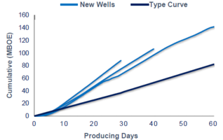
- 3 Wolfcamp wells in North Loving County delivered IP30 rates above 2,700 Boe/d (60% oil).
- Generation 2 frac design utilizing ~2,500 lbs/ft and ~2,310 gals/ft.
- Secured agreement to utilize local sand.
- Transitioning to pad development toward the back half of 2018.
- Current A&D market not competitive with internal projects.
Apache Corporation
- Averaged 17 rigs and 6 frac crews during the quarter.
- Midland Basin: 6 rigs and 3 frac crews.
- Delaware Basin: 9 rigs (6 Alpine High) and 3 frac crews.
- Permian Basin production averaged 161,000 Boe/d, 11% higher from the previous quarter.
- PoP’d 3 pads in the Midland Basin.
| Pad Name | Target Zones | Wells | Avg. Lateral Length | Average IP30 BOE/d | Spacing |
|---|---|---|---|---|---|
| June Tippet 1213 | LSPBY/ WFMP B | 4/3 | 7,646 | 1,058 | 440’/ 880’ |
| Lynch A | LSPBY | 6 | 7,774 | 1,142 | 440’ |
| CC 4045 | WFMP B1/ B3 | 6 | 10,432 | 1,379 | NA |
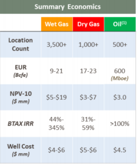
- Released Alpine High operational update, current location count and economics.
- D&C’d 3 Alpine High wells with an average lateral length of 4,500’ for ~$5.5 million.
- At YE2018, expect to have spent $1 billion on infrastructure.
- Drilled over 70 wells in area.
- Confirmed landing zones in 5 different formations.
- Bone Spring: 1
- Wolfcamp: 3
- Pennsylvanian: 1
- Barnett: 2
- Woodford: 3
Callon Petroleum
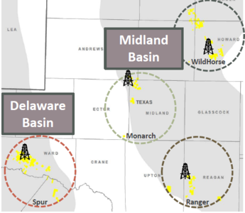
- Currently running 4 rigs and 2 frac crews in the Permian Basin.
- Adding additional rig to the Delaware Basin in the first quarter 2018.
- Production grew by ~11% from previous quarter to average 22,500 Boe/d.
- Drilled 13 gross and PoP’d 11 wells during the quarter.
- Have seen service costs inflation of ~15%.
- Completed first operated Lower Wolfcamp A well in Ward County (Spur).
- Sleeping Indian A1 #1LA outperforming 7,500’ type curve with an oil cut of ~82%.
- Plan on co-developing Upper and Lower Wolfcamp A by the end of 2017.
- Optimizing frac design and landing zone at Spur:
| Description | Previous Operator | Callon Design | Notes |
|---|---|---|---|
| Fluid Type | Slickwater | Slickwater | |
| Stage Spacing | 125 | 200 | Increased spacing |
| Clusters | 8 | 10-12 | More clusters |
| Proppant Loading (lbs/ft) | 2,800 | 2,000 | Reducing intensity |
| Fluid Loading (gals/ft) | 3,150 | 2,520 | Reducing intensity |
- In Howard County (Wildhorse), company will begin testing 10 wells per section in the Wolfcamp A in 2018.
- Running 2 rigs and targeting 3 zones.
- Wolfcamp A Easternmost and southernmost delineation wells tracking 1 MMboe type curve.
- Optimizing completion design with increased near-wellbore focus and more control over frac height by lowering sand and fluid loading and employing frac diverters..
- PoP’d first operated Lower Wolfcamp B since 2015 in Reagan County (Ranger).
- Outperforming type curve by ~20%.
Drilled first Wolfcamp C in Ranger which is scheduled for completion in the fourth quarter. 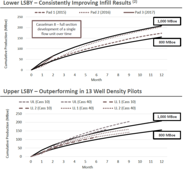
- In Midland County (Monarch), results from two sets of tests reinforce optimal Lower Spraberry density as 13 wells per section on stack/stagger pattern.
- Increases Monarch Lower Spraberry inventory by ~15%.
- Plan on monetizing select infrastructure assets in the near future.
- Expect to complete $20 million dollar divestiture in the first quarter of 2018.
- ~50% of oil volumes hedged based on 2H17 midpoint of production guidance.
Plan on achieving cash flow neutrality within 4-6 quarters.
Carrizo
- Currently running 4 rigs in the Permian Basin.
Drilled 5 wells and PoP’d 3. 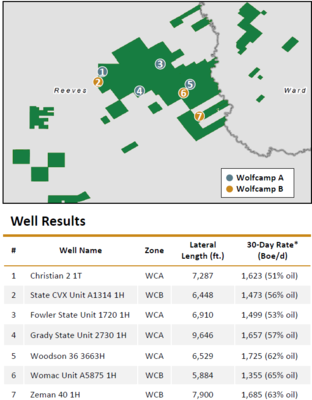
- On its acquired acreage from EXL (Phantom Area), brought two wells online.
- Christian 2#1H completed in the Lower Wolfcamp A with a 7,300’ lateral achieved an IP30 rate of 1,728 Boe/d (48% oil) on a restricted choke.
- State CVX Unit A 1314#1H completed in the Upper Wolfcamp B with a 6,400’ lateral achieved an IP30 rate of 1,559 Boe/d (52% oil) on a restricted choke.
- Targeting 40 days from Spud to TD in the Delaware Basin.
- Current well cost for a 7,000’ lateral are ~$8.1 million.
- Drilling efficiencies expected to put downward pressure on current AFE.
- Interwell spacing in the Wolfcamp is around 660’.
- Inventory in Phantom is ~350 net locations.
- Recent focus has been on Wolfcamp B where formation is up to 600’ thick in portions of the acreage.
- Running tests on the Wolfcamp C and Wolfcamp D to determine prospectivity.
Expect to be cash flow positive by YE2018.
Centennial Resources
- Running 6 rigs through the end of the year.
Production averaged 34,700 BOE/d (61% oil), an increase of 17% from the second quarter. 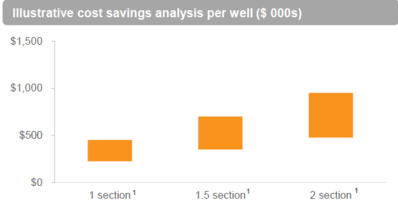
- Entered into long-term supply agreement with local sand provider.
- Completed first wells utilizing in basin proppant during the quarter with positive results.
- Early production data (~50 days) from Eady A and Eady B wells in-line with northern white fracs.
Anticipate using local sand will save between ~5%-10% in total well costs per well.

Announced results from 7 wells PoP’d in the quarter.
| Well Name | Formation | Area | Lateral | IP30 Oil (Bbl/d) | Oil % | Cluster/Stage | Proppant (lbs/ft) | Notes |
|---|---|---|---|---|---|---|---|---|
| Matador 6-33 3H | UWFMP A | Reeves | 4,264’ | 1,599 | 74% | 15 | 2,386 | Company best well to-date |
| CH Knight 6H | UWFMP A | Reeves | 4,351’ | 1,178 | 73% | 15 | 2,334 | |
| Romeo 1H | SBSG | Lea | 4,204’ | 1,105 | 84% | 15 | 3,003 | |
| Eady A 4 59-60 1H | UWFMP A | Reeves | 7,010’ | 1,222 | 56% | 15 | 3,055 | Used local proppant |
| Eady B 4 59-60 2H | LWFMP A | Reeves | 6,608’ | 1,142 | 60% | 15 | 2,898 | Used local proppant |
| Roadrunner 5H | UWFMP A | Reeves | 9,462’ | 1,531 | 83% | 15 | 2,285 | |
| Brooks 3H | UWFMP A | Reeves | 9,572’ | 1,375 | 84% | 15 | 2,073 | |
| Brooks 4H | LWFMP A | Reeves | 8,629’ | 1,135 | 83% | 15 | 2,154 |
- 2 well Eady pad was completed in the Upper and Lower Wolfcamp A utilizing a staggered 440’ spacing pattern.
- Shifting from single well development to pad drilling extended laterals; lateral length increased ~20% from previous quarter.
- Company has minimal amount of hedges in place, “We are bullish on the macro crude oil environment and believe that oil prices are poised to trend higher as a result of continued tepid U.S. production growth, robust global demand and declining global inventories.”
Chevron
- Currently running 15 rigs in the Permian.
- Released economics from three recent pad developments drilling 10,000’ laterals.
- Economics expected to be greater than 30% IRR.
- Breakeven estimated to be ~2.25 years.
- Economics based on $50 WTI, $2.50 gas and $25 NGL.
| Metric | Value |
|---|---|
| EUR | ~1.9 MMBOE |
| Development Cost | $6/BOE |
| Operating Cost | $5/BOE |
| G&A Cost | $3/BOE |
| Net realization | $33/BOE |
- Expected to be close to cash flow neutrality in 2018 at current prices.
Cimarex Energy
- Currently running 9 rigs in the Permian.
- Adding additional rig in the Permian by year end.
- Permian production averaged 105,000 Boe/d (42% oil), a decrease of ~2% from the previous quarter.
- Well costs remain flat across all assets in the Delaware Basin compared to the previous quarter.
- Wolfcamp 2-milers: $10.5-$12 million
- Bone Spring 1-milers: $5.5-$6.7 million
- Company appears to be set on 2,500 lbs/ft of proppant; amount has not changed since July 2016.
- Focusing on perf placement, number of stages and pump time.
Texas Activity
Reeves County focus targeting Upper Wolfcamp. Currently have 24 2-milers producing. 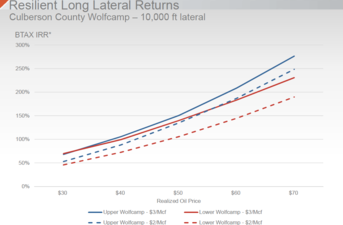
- Highlighted Culberson County Wolfcamp 2-mile economics resilency.
- Upper Wolfcamp IRRs ~150% at $50 WTI and $3 Mcf
- Lower Wolfcamp IRRs ~140% at $50 WTI and $3 Mcf
At $30 WTI and $2 Mcf, IRRs would still be ~50%.

- Animal Kingdom infill testing 14 wells per section currently drilling.
- Utilizing stacked staggered spacing vertically spaced at 225’ and horizontally spaced at 1,216’.

- Early results encouraging from Seattle Slew spacing with similar per well results compared to 6 and 8 wells per section.
- Six wells in stack staggered pattern vertically spaced at 125’ and horizontally spaced at 904’. 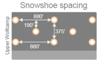
- Snowshoe development testing 18 wells per section in the Upper Wolfcamp.
- 8 wells drilled in 3 different landing zones spaced in a 3-2-3 stack staggered pattern.
New Mexico Activity
- Within Red Hills acreage located in Southern Lea County, company will begin drilling two 2-milers targeting the Upper Wolfcamp and three 2-milers targeting the Avalon.
- Early stages of drilling 6 wells from two pads testing the equivalent of 12 wells per section in the Upper Wolfcamp within one bench.
- Begin spudding in the fourth quarter an Avalon spacing pilot, which will consist of 6 wells from two pads testing the equivalent of 20 wells per section in a stack staggered pattern within one zone.
Devon
- Currently running 9 rigs and 2 frac crews.
- Net production averaged ~57,000 Boe/d (74% liquids) during the quarter.
- Spud 40 wells during the quarter.
- 1H’18 hedge position is ~40% of current production.
- Actively accumulating additional hedges for upcoming 6 quarters.
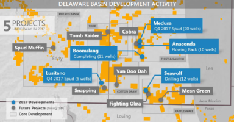
- At it’s Anaconda development project, achieved ~$1 million in cost savings per well.
- Key supply-chain initiatives that lowered costs include, decoupling of bundled services and locking in key services at below-market rates.
- Sourced all finer mesh sand locally, which saved ~30% compared to Northern White sand.
- Locked in sand requirement through 2018 at below current market rates.
- Have not seen any degradation from using locally sourced sand.
- 10 well Anaconda development project cycle time from spud to 1st production was 5.8 months.
- Wells were landed in 3 different Leonard landing zones, testing spacing of up to 19 wells per section.
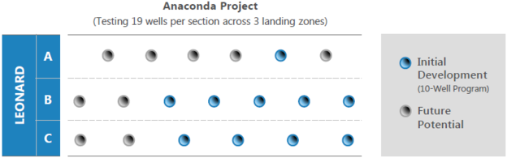
- PoP’d 3-mile lateral in project which achieved an IP24 rate of ~3,200 Boe/d.
- Drilling times at the project reached a company record of ~1,200 feet per day, a 50% increase compared to historical drilling times in the area.
- Average well costs at the Anaconda development project were ~$5.5 million per well.
5 multi-zone development projects expected to be underway by year end. 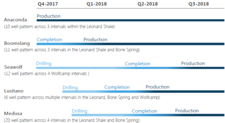
- Company estimates efficiency gains and improved recoveries from developments will increase net present value on a per-section basis by more than 40% compared to traditional pad developments.
- Plans are underway to submit 10 master development plans (MDPs) to accommodate up to 1,600 permits by year end.
- To date, Devon has received approval for 2 MDPs.
- Bone Spring well costs are averaging ~$5.5 million per well.
- Company estimates that they have more than 3,000 Bone Spring locations from 5 different landing zones.
At $50 WTI and $3 Henry Hub, budget is expected to be ~$2-$2.5 billion, which will be funded through operating cash flow.
Diamondback Energy
- Currently running 9 rigs and 4 frac crews.
- Plan on adding additional rig in early fourth quarter.
- Production for the quarter averaged 85,000 Boe/d (73% oil), up 10% over previous quarter.
- Acquired over 1,000 net acres and ~950 royalty acres for $102 million.
- Forecasting ~5% well cost inflation in 2017.
- Provided gross location count by zone for Midland (~2,300 locations) and Delaware (~2,200 locations) Basin. 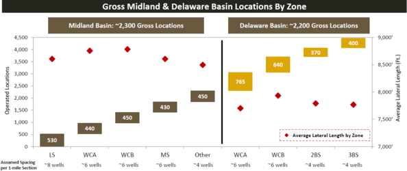
Delaware Basin Results
- Announced results from company’s first operated 2-well pad. The State Neal Lethco 3201WA and 3202WA had an average IP30 of 130 Boe/d per 1,000’ (88% oil).
- Company’s second 2-well pad, the Sibley 2WA and 3WA, targeted the Upper and Lower Wolfcamp A with an average lateral length of 7,462’ and achieved an average IP10 of 152 Boe/d per 1,000’ (80% oil).
- In Pecos County, the Kelley State 2H 2nd Bone Spring had a peak IP30 of 195 Boe/d per 1,000’ (92% oil).
- First operated Lower 2nd Bone Spring and compares favorably with nearby Wolfcamp A wells.
- Expect to delineate zone further in 2018.
- Majority of capital will be deployed to Wolfcamp A with a small portion continuing to delineate the 2nd and 3rd Bone Spring and Wolfcamp B.
- Going forward, most wells will be drilled with 10,000’ laterals.
- “Due to amount of fluid produced and current infrastructure in place, we do not plan on drilling longer than 2-mile laterals at this time.”
Midland Basin Results
- Completed two 4-well pads targeting the Lower Spraberry, Wolfcamp A and Wolfcamp B in Midland County.
- Blackfoot West Unit was completed with an average lateral length of 9,721’ achieved an average IP30 of 152 Boe/d per 1,000 (89% oil).
- Whitefish Unit was completed with an average lateral length of 12,843’ in the Wolfcamp B achieved an average IP30 of 156 Boe/d per 1,000 (86% oil).
- In Andrews County, completed a 2-well pad targeting the Lower Spraberry.
- UL Mason West Unit was completed with an average lateral length of 12,940 and had an average IP30 rate of 114 Boe/d per 1,000’ (91% oil).
- UL Mason West Unit was completed with an average lateral length of 12,940 and had an average IP30 rate of 114 Boe/d per 1,000’ (91% oil).
Encana Corporation
- 5 year plan expected to generate corporate returns (ROCE) between 10%-15% with a CAGR of 25%.
- Estimated to have ~3,450 premium locations in the Midland Basin delivering ATRoR greater than 35%.
- Provided an Investor Day Presentation in October. See the link below for a summary of highlights:
Energen
- Currently running 6 rigs and 2 frac crews.
- During the quarter PoP’d 17 wells in the Midland Basin and 9 wells in the Delaware Basin.
- 77% of the wells were batched completed in multiple zones.
- Acquired 1,300 net acres of unproved leases for ~$20 million.
- Acquired more than 11,000 net acres for ~$235 million at an average price of ~$21,400 per acre YTD.
- Gen 3 frac design continues to outperform type curves. Performance enhancements, relative to a 2-mile lateral, are detailed by zone in table below.
| Basin | Formation | Well Population | Days Online | Type Curve | % Above TC |
|---|---|---|---|---|---|
| Delaware Basin | Wolfcamp A/B | 27 | 340 | 1.75 MMboe | 21% |
| Midland Basin | Spraberry | 18 | 175 | 1.2 MMboe | 40% |
| Northern Midland | Wolfcamp A/B | 17 | 250 | 1.2 MMboe | 6% |
| Central Midland | Wolfcamp A/B | 16 | 250 | 1.2 MMboe | 11% |
| Central Midland | Lower Spraberry | 2 | 240 | 850 Mboe | 45% |
- Midland Basin proppant intensity is ~1,800 lbs/ft and Delaware Basin proppant intensity is ~1,900 lbs/ft.
- Testing higher proppant loading in both basins in 2018.
Image below summarizes evolution of frac design from Gen1 to Gen3. 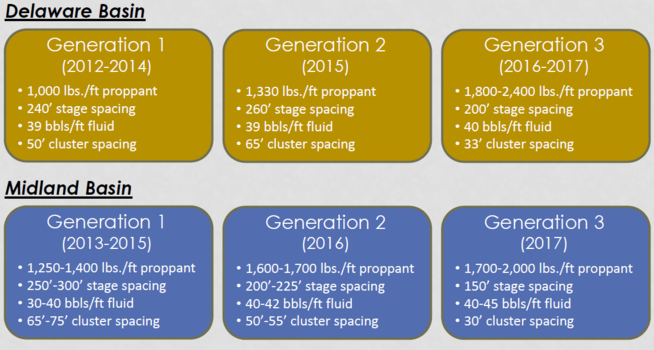
- Company attributes outperformance to batch completing multiple zones which maximizes reservoir productivity.
- Completing 5 zones (Jo Mill, MSPBY, LSPBY, WFMPA and WFMP B) at a time in the Northern Midland Basin.
- Completing 2 zones (WFMPA and WFMP B) at a time in the Central Midland Basin.
- Completing 2 zones (WFMPA and WFMP B) at a time in the Delaware Basin.
- Internal results have shown that the Wolfcamp A, Wolfcamp B and the Lower Spraberry are in tanks together.
- Important to land Wolfcamp A properly because of interaction betwen the Spraberry and Wolfcamp B.
- “We’re trying to drop the Wolfcamp A down and the Wolfcamp B down a little bit to get a little bit more distance to see if those Wolfcamp As have performed better.”
- Testing 30 wells per section in the North Midland Basin on 60% of section.
- “We’ve been testing some fairly dense spacing in our mind and we’ve gotten really, really good results.”
- Company believes the Middle Spraberry and Jo Mill formation in the Northern Midland Basin are underappreciated by the market.
Central Basin Platform assets estimated to fetch ~$425 million if put on the market.
EOG Resources
- Average 13 rigs in 2017.
- Added 100,000 net acres and 540 premium drilling locations (ATRoR >30% @ $40 oil) prospective in the First Bone Spring.
- Estimate resource potential to be ~540 MMBoe.
- Completed ~10 net wells in 2017.
- Delineated formation with 15 wells across 30 mile area.
- 1st Bone Spring EUR ~1,185 Mboe based on 7,000’ lateral with D&C cost of ~$7.3 million.
| 1st Bone Spring | IP30 Bo/d | IP30 Boe/d | Lateral |
|---|---|---|---|
| 2017 YTD 7 Gross Wells | 1,205 | 1,825 | 4,600’ |
| Wicked 17 State Com #301H | 1,910 | 2,730 | 4,500’ |
- Antietam 9 Fed Com 701-703H 3 well pad completed in the Wolfcamp with an average lateral of 7,000’ had an average IP30 of ~4,145 Boe/d (66% oil).
- Righteous 6 State Com 601Y completed in the Bone Spring with a 7,100’ lateral achieved an IP30 of 2,160 Boe/d (81% oil).
- 9 wells in the Leonard completed with an average lateral of 7,600’ had an average IP30 of 1,630 Boe/d (64% oil).
- Updated Delaware Basin premium drilling locations:
- Wolfcamp: 1,700
- 1st Bone Spring: 540
- 2nd Bone Spring: 1,350
- Leonard: 1,100
- Wolfcamp well cost for 7,000’ lateral is ~$7.6 million.
- Started testing the Northwest Shelf in 2017.
- Announced Eastern Anadarko Basin Woodford Oil Play.
- 50,000 net acres and ~260 net premium locations.
- View macro oil market favorably, “We believe forecasted US production has not grown as expected.”
- On target to deliver 20% oil growth and pay dividend within cash flow in 2017.
ExxonMobil
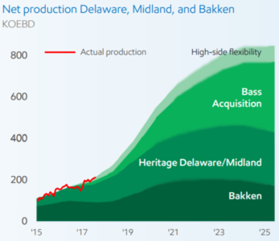
- Currently running 20 rigs in the Permian.
- Increasing to ~30 rigs by YE2018.
- Permian CAGR expected to be ~45% through 2020.
- Midland Basin average lateral length in 2017 was ~10,000’.
- Plan on drilling first 3-mile lateral in the fourth quarter.
- First Bakken 3-mile lateral has been completed.
- Since acquiring Bass Properties, company has added ~22,000 net acres in the Permian at an average cost of ~$20,000 per acre.
- Have not seen any material deterioration in frac crews or service equipment.
- Not doing buybacks to offset dilution from benefit programs.
- Decision is a function of CAPEX requirements and near-term business outlook made on a quarterly basis.
- Asset acquisitions continue to be more attractive than Corporate M&A.
Halcón Resources
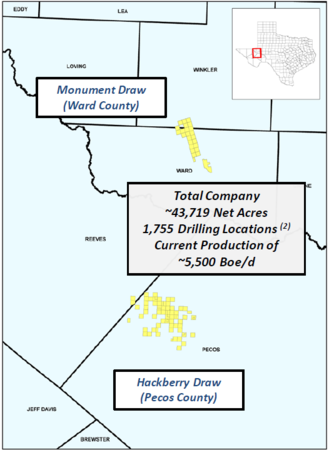
- Currently running 3 rigs and 2 frac crews.
- Dropping spot frac fleet in the fourth quarter.
- Production averaged 4,799 Boe/d (70% oil) during the third quarter.
- Letting industry experiment with local sand.
- Concerned about crush strength of 40/70 brown being similar to formation fracture-closure pressure.
- Days from Spud to TD in Ward County is ~40 days and ~27 days in Pecos County.
- Recently completed two 2-milers in the Wolfcamp A on its Hackberry Draw prospect (Pecos County).
- Ethel Jesper East 1H reached an IP24 rate of 1,344 Boe/d; Early performance is tracking above 1.2 MMboe type curve.
- Berkley State East 2H is still cleaning up.
- In process of drilling the company’s first 3rd Bone Spring in Hackberry Draw.
- On their Monument Draw prospect (Ward County), the company is currently completing a 2-mile Upper Wolfcamp on the Northern Option acreage.
- Northern Option acreage consists of ~8,320 net acres held under an option contract.
- Assuming the the option is exercised, the company will pay ~108 million, or ~$12,980 per acre unadjusted for production.
- Southern Hackberry draw EUR is ~1.8 MMboe while Monument Draw EUR is ~1.2 MMboe.
- At strip pricing with three rigs running, company should reach cash flow neutrality in 2019.
- Company estimates that they have ~1,755 gross operated locations. 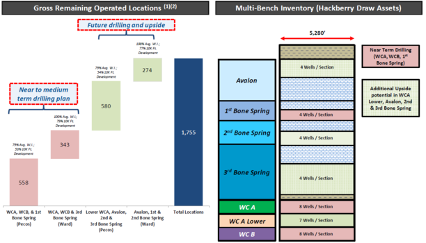
- Side note: Halcón management wins two blue ribbons for the most unenthusiastic and tense conference call this quarter.
Jagged Peak Energy
- Plan on running 6 rigs and 3 frac crews in the fourth quarter.
- Production averaged 19,180 Boe/d (78% oil), an increase of 30% from the previous quarter.
- Drilled 15 wells and PoP’d 11 with an average lateral length of ~8,210’.
- Increased Delaware Basin acreage position to ~74,700 net acres.
- Current development inventory is ~1,412 locations from the Lower (427) and Upper (353) Wolfcamp A , Wolfcamp B (318) and 3rd Bone Spring (314).
- Drilled company best 9,900’ lateral in 22 days from Spud to TD.
- Delaying completions primarily due to frac equipement reliability from service providers.
- Spot prices for frac fleets have increased by ~$1 million per well. 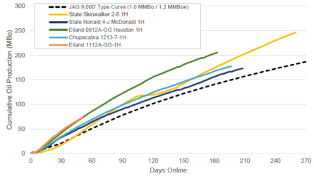
- Recent Wolfcamp A completions on its Whiskey River project area (Reeves/Ward County line) are outperforming 1.2 MMboe type curve (9,000’ lateral) by 35%.
- Eiland 112-GG 1H completed with 7,657’ lateral achieved an IP30 rate of 1,761 Boe/d.
- Eiland 0812-GG Houston 1H completed in the second quarter has produced 192,577 Boe in 180 days.
| Completion Design | Original Completion | Optimized Completion | Notes |
|---|---|---|---|
| Pump Rate | >80bpm | >80bpm | No change |
| Cluster Spacing | 40’-65’ | <20’ | Significant decrease in spacing |
| Stage Spacing | 180’-550’ | 220’ | |
| Proppant/ft | 2,500 | 2,000 | 20% decrease |
| Fluid/ft | 3,570 | 2,730 | 23% decrease |
| Diversion | No | Yes | Following industry trend using diverters |
- Continue to see positive results from the Wolfcamp B.
- Eiland 1806A-33 1H completed with a 5,965’ lateral achieved an IP30 rate of 1,455 Boe/d (85% oil).
- Actively delineating multiple formations across acreage; D&C’d first Wolfcamp C and Woodford.
- State 5913A GG Houston 2H Wolfcamp C completed with a 6,662’ lateral had an IP24 rate of 1,179 Boe/d (83% oil).
- Company estimates Wolfcamp C is prospective across 70% of current leasehold and could potentially add 200 locations to its inventory.
- Wolfcamp C has higher porosity than the Wolfcamp A and B and benefits from strong pressure support from overpressured Wolfcamp section. 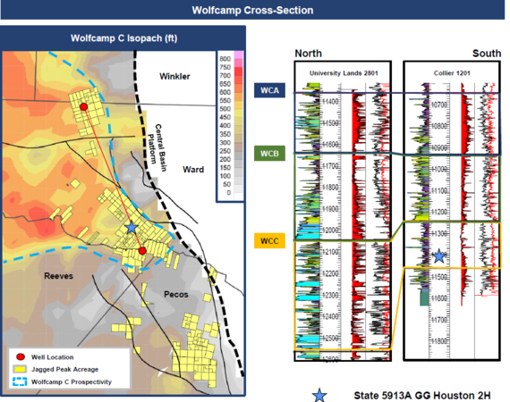
- Successfully tested Woodford formation on its Big Tex project area (Pecos County).
- SNL 3427-142 2H completed with a short lateral of 1,665’ achieved an IP30 rate of 377 Boe/d (63% oil).
- Very low water cut over life cycle of the well: 1:1 ratio of water to oil.
- Actively leasing Woodford acreage and, including new and existing leases, total prospective Woodford acreage is ~27,000 net acres.
- Thickness of formation ranges from 210’-380’ thick.
- Appears to be linear relationship between depth and maturity.
- G&G data indicate very low content of clay; rock properties are as good or better than Wolfcamp.
- Early analysis indicates the Woodford could add ~120 locations to its inventory.
- Further development of formation will be in late 2018 or early 2019. 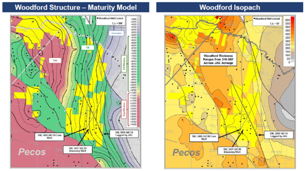
Laredo Petroleum
- Plan on exiting 2017 with 4 rigs running.
- Production averaged 60,011 Boe/d (44% oil).
- Management blamed lighter oil mix on longer flowback period from extended laterals.
- Completed 3 wells with laterals greater than 15,000’.
- Identified ~500 Upper and Middle Wolfcamp locations that support super extended laterals.
- Well costs increased ~20% to $7.7 million, up from $6.4 million.
- Looking into locally sourced sand to lower completion costs.
- Do not see significant local supply of sand hitting the market in 2018. 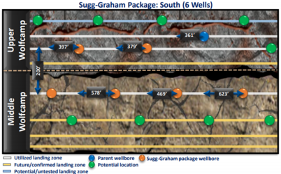
- Sugg-Graham 9 well test drilled with tighter spacing exceeding 1.3 MMboe type curve.
- 2,400 lbs/ft proppant design outpeforming 1.3 MMboe type curve by ~42%.
- Shifting to more perfs per cluster which will reduce cycle times and lower completion costs.
- Corporate goal is to achieve free cash flow neutrality by YE2019.
Marathon Oil Corporation
- Currently running 4 rigs and 1 frac crew.
- Production in the Delaware Basin averaged ~9,000 net Boe/d.
- PoP’d 5 wells during the quarter.
- Wolfcamp X-Y results look promising.
- Chicken Fry 1H well achieved an IP30 of ~2,020 Boe/d (67% oil).
- El Presidente 4H well achieved an IP30 of ~1,500 Boe/d (69% oil).
- Running 3D seismic over core acreage.
- Continue to work on consolidating acreage; actively looking for ways to strengthen position in Northern Delaware.
- Marathon could be a good candidate for swaps and trades due to their disconnected footprint.
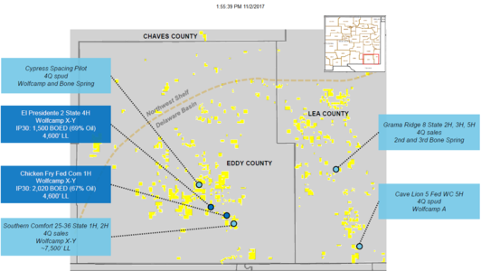
- Balancing capital and dividend to cash flow neutrality at $50 WTI.
Matador Resources
- Currently running 5 rigs in the Delaware Basin.
Delaware Basin production averaged ~30,700 Boe/d, up 11% from the previous quarter. 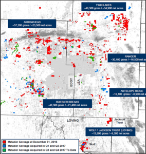
- Acquired ~9,700 net acres during the quarter, bringing total Permian Basin acreage to ~116,00 net acres.
- In 2017, company has acquired ~25,000 net acres paying between $7,000-$8,000 per net acre excluding any associated production.
In it’s Rustler Breaks area, the Wolfcamp A-XY continues to perform well. Announced results of 3 Wolfcamp A-XY wells in Southern Eddy County.
| Well | IP24 Boe/d | % Oil |
|---|---|---|
| Joe Coleman 13-23S-27E RB #208H | 1,779 | 75% |
| Tom Walters 12-23S-27E RB #208H | 1,498 | 75% |
| Michael Collins 11-23S-27E RB #208H | 1,534 | 76% |
- Completed public offering of 8 million shares receiving net proceeds of ~$208.7 million.
- Proceeds were used to fund 6,600 acre acquisition and ~$38 million in infrastructure build-out.
- Proceeds were used to fund 6,600 acre acquisition and ~$38 million in infrastructure build-out.
Murphy Oil
- Announced entry into the Midland Basin by acquiring ~31,000 net acres at ~$1,700 per acre.
- Began leasing acreage in mid-2016.
- Contiguous acreage position located in Dawson and Andrews Counties.
- Drilled 1 Wolfcamp B and Lower Spraberry during the quarter.
- Average lateral length of ~10,500’.
- Completion design: 100 mesh sand and between 1,700-2,500 lbs/ft.
- Claim to have ~275 locations with breakeven pricing below $40/bbl.
- Core analysis confirms oil maturity window and porosity in line with expectations.
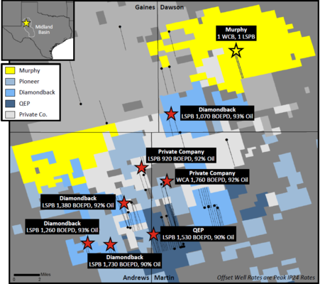
Noble Energy
- Operated 5 rigs and 2 frac crews during the quarter.
- Drilled 17 wells with an average lateral length of 8,280’.
- Completed 14 wells which had an average lateral length of 7,295’.
- Delaware Basin gross location count estimated to be ~4,225.
- In third quarter, average drilling cost per foot was ~$370.
- Drilled 10,567’ lateral in 19 days, company record for Delaware Basin.
- More than 90% of all long laterals landed within ten foot of target zone.
- Base Frac design currently utilizing 3,000 lbs per foot, up 50% from fourth quarter 2016 design of 2,000 lbs per foot.
- Incorporating locally sourced 100 mesh starting in the fourth quarter.
- Company claims using local sand could save several hundred thousand dollars per well.
- Last quarter RSPP stated that using local sand could save ~$600 thousand per well.
- Company claims using local sand could save several hundred thousand dollars per well.
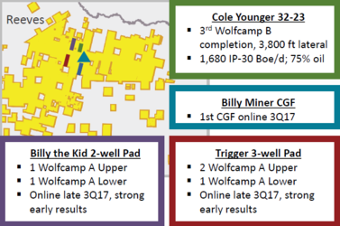
- PoP’d third Wolfcamp B well, Cole Younger 32-33 completed with 3,800’ lateral had an IP30 of ~1,680 Boe/d (75% oil).
- Continue to test Upper and Lower Wolfcamp A spacing: Billy the Kid 2 well pad showing early time strong results.
- Monroe pad, which was brought online in July, designed to test Wolfcamp A Upper and Lower and 3rd Bone Spring spacing has not seen any communication between zones (pumped chemical tracers).
- Calamity Jane 7 well test is expected to be online by December of this year.
- Similar spacing to Monroe pad with more wells.
- 3 Upper and Lower Wolfcamp A
- 2 3rd Bone Spring
- Similar spacing to Monroe pad with more wells.
- Second Wolfcamp C well expected to be PoP’d later this year.
- Service cost inflation has been negligible in the third quarter.
- Expanding oil throughput capacity from ~15,000 Bbls/day currently to ~90,000 Bbls/day by midyear 2018.
- Expect to deliver double digit corporate returns (ROCE) within next few years at $50 oil price.
Occidental Petroleum
- Currently running 11 rigs.
- Expect to grow production in Permian Resource division by 30% CAGR from 2017-2019.
- Shifting activity to New Mexico from Greater Barrilla Draw in Reeves County.
Permian Resource production averaged 139 Boe/d during the quarter. 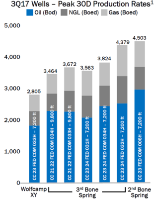
- Last 7 wells brought online in Greater Sand Dunes had and average IP30 of 3,750 Boe/d
- Company estimates that they have more than 2,000 locations in area.
- Increasing rig count to 6-7 rigs in first quarter of 2018.
- Released 4 wells results in Greater Barilla Draw Area.
- Collie A East N63H completed in the 2ndBone Spring, had a 9,725’ and achieved a peak IP30 rate of 1,155 Boe/d (84%).
- Toyah 4 9 2N 12H completed in the Wolfcamp A, had a 9,890’ and achieved a peak IP30 rate of 1,672 Boe/d (83%).
- Agate 1749-142-3S 25H completed in the Wolfcamp B, had a 7,439’ and achieved a peak IP30 rate of 1,611 Boe/d (70%).
- Agate 179 142 2S 21H completed in the Wolfcamp B, had a 7,197’ and achieved a peak IP30 rate of 1,469 Boe/d (80%).
Logistic and Maintenance Hub located in New Mexico expected to save between $500-$750 thousand per well. 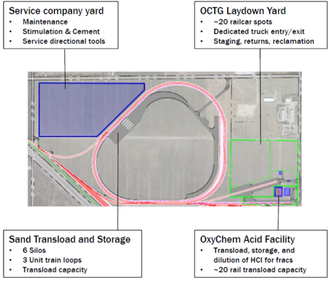
- Highest priority is to swap acreage due to historical success of blocking out core development areas.
- “The more trading we can do rather than outright sales is preferred.”
- Using integrated planning and doing field by field development plans to maximize value.
- See here: Oxy Development Plan
- ~80% of operations are utilizing pad drillling, expect to be at 95% by YE2018.
- Journey to Digital Transformation: Oxy presentation focused heavily on leveraging machine learning and artificial intelligence.
Capital expenditures expected to be in line with cash flow by YE2018.
Parsley Energy
- Plan on running 14-15 rigs and 5 frac crews in 2018.
- Expect to complete 40 wells per quarter in 2018.
- Production averaged 71,534 Boe/d (66% oil), up ~11% from the previous quarter.
- Spud 38 and PoP’d 36 wells.
- In 2018, the average lateral length is expected to be ~9,500’
- Cycle times in the Midland Basin and Delaware Basin from Spud to TD respectively are ~28 days and ~40 days.
- Company will focus on estabilshed areas, formations and configurations in 2018.
- Dialing back on derisking zones and downspacing from 25% in 2017 to 5%-10% next year. Possible read through on 2017 downspacing tests.
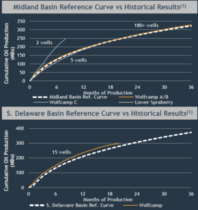
- Updated Midland Basin type curve to 1.6 MMboe; reflects a 10,000’ lateral and higher rates of gas and NGL production.
- Well costs are ~$8-$8.5 million.
- Oil per lateral foot remained unchanged compared to previous 1 MMboe type curve.
- In the Delaware Basin, introduced a 1.5 MMboe type curve based on a 10,000’ lateral.
- Well costs are ~$11-$11.5 million.
- Delaware Basin type curve expected to produce more oil and less gas than Midland Basin type curve.
- Agreements are in place to start pumping local sand in the first quarter of 2018.
- Company has locked in ~50% of drilling costs in 2018.
Midland Basin Results
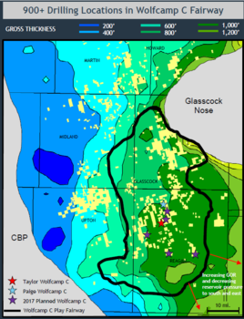
- PoP’d second Wolfcamp C during the quarter, the Paige had an IP60 rate of ~1,600 Boe/d (~56% oil).
- The Paige IP’d approximately 40% below the Taylor.
- Plan on drilling 5 more Wolfcamp C wells all located in Reagan County.
- Concentrating developmnet in Glasscock and Reagan County with the potential for development in Upton County as well.
- Based on early results, Wolfcamp C production expected to have very high flush oil production and stabalized oil rates, but higher gas during the lifecycle of the well.
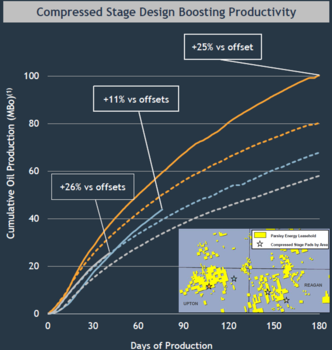
- Several compressed stage tests outperforming offsets with standard design by 10%-25% with 5%-7% incremental cost.
- Early results indicate 5%-15% uplift in IRRs.
- Outcome of compressed stage tests suggest more uniform cluster treatment, greater near wellbore frac complexity and higher hydrocarbon recovery factor.
- Plan on additional tests in 2018.
- Upton County compressed stage test (Area 1: orange star and line</span) outperformance primarily due to excellent quality of rock.
Delaware Basin Results
4 wells that reached production since last update achieved an average IP30 rate of 1,333 Boe/d (67% oil) with an average lateral of 7,867’.
Corporate: Hedged ~100% of oil production based on 2018 midpoint.
PDC Energy
- Currently running 3 rigs with a focus on Eastern and Central acreage blocks.
- Delaware Basin production averaged 12,845 Boe/d, a 28% increase from the previous quarter.
- Drilled 6 wells and PoP’d 4.
- Recorded an asset impairment of $252 million on Western acreage block primarily in Culberson County (13,400 net acres).
- An additional impairment of $75.1 million of goodwill was also taken on company’s Delaware assets.
- Drilled 2 dry holes and subsequently wrote off $41.9 million of exploration, geologic and geophysical expenses.
- Geology looks to be extremely complex in area.
Eastern Reeves County Results 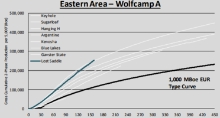
- Drilled first enhanced cluster spacing in the Wolfcamp A.
- Lost Saddle Wolfcamp A (4,000’ lateral) achieved an IP30 of 1,450 Boe/d; After 150 days online, production is more than double their 1 MMboe type curve.
- Type curve based on 5,000’ lateral.
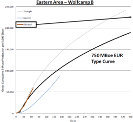
- Elkhead Wolfcamp B (10,000’ lateral) performing in line with their 750 Mboe type curve.
- Type curve based on 5,000’ lateral.
- Provided commentary on Hermit well completed in Northwest portion of Eastern Reeves County Acreage.
- “It’s a very gassy well compared to rest of the block. We believe it’s across from a fault which runs north towards the arch.”
- Go forward well costs for a 1-mile, 1.5 mile and 2-mile lateral are approximately $8.5 million,$10.5 million and $12.5 million.
- Services costs have stabilized; have not seen significant increases during the quarter.
Pioneer Natural Resources
- Currently running 20 rigs in the Midland Basin with ~7 frac crews.
- 16 rigs in northern area and 4 rigs in southern Wolfcamp JV area (60% WI).
- Recently added 2 rigs to improve operational flexibility by increasing DUC inventory by about 20(I’m still trying to figure this one out).
- PoP’d 61 wells during the quarter.
- By year end, ~230 wells will be PoP’d with ~55% in the Wolfcamp B, ~30% in the Wolfcamp A and ~15% in the Lower Spraberry.
| Formation | Lateral Length | Well Cost ($MM) | EUR (MMBOE) |
|---|---|---|---|
| Wolfcamp B | ~10,000’ | ~$8.8 | 1.7 |
| Wolfcamp A | ~9,500’ | ~$7.8 | 1.3 |
| Lower Spraberry | ~9,500’ | ~$7.5 | 1.0 |
- IRRs are between 40%-75% based on Version 3.0 (1,700 lbs/ft and 2,100 gals/ft) completions and $50 oil and $3 mcf.
- Focusing on proppant loading vs fluid loading, believe they have the right amount of fluid in current completions.
- Early production from 12 wells utilizing 3.0+ Frac design outperforming 3.0 design. Wells in Pembrook area frac’d with 5,000 lbs/ft and 4,200 gals/ft.
- North University Area: 40 ft cluster spacing and 240 ft stage length.
- Hutt Area: 30 ft cluster spacing and 150 ft stage length.
- South University Area: 30 ft cluster spacing and 150 ft stage length.
- Pembrook Area: 20 ft cluster spacing and 100 ft stage length.
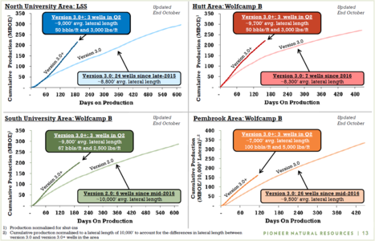
- Used sliding sleeves on 3 well pad in the Lower Spraberry Shale.
- Each well had 156 sliding sleeves.
- First spacing test performed in the Jo Mill in northern acreage.
- Postponing expansion of Brady plant sand mine due to regional sand mine expansions in West Texas.
- ~75% of recent wells in Northern Area have used a 4-string casing design.
- Exported 1.4 million barrels of Midland Basin oil to Asia and Europe; forecasting increase to 2.3 million barrels in fourth quarter.
- Increased 2018 derivative position to cover more than 80% of oil production and more than 35% of gas production.
QEP Resources
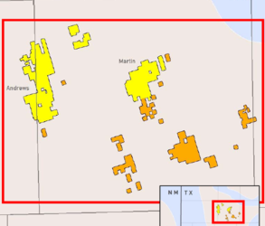
- Currently running 6 rigs and 2 frac crews.
- 28 wells are scheduled to be completed and PoP’d in the fourth quarter.
- Disclosed 29 DUCs at the end of the third quarter.
- Closed on 13,000 acre Martin County acquisition which was announced in July (orange acreage).
- Completed 10 wells (100% WI) during the quarter. Wells targeted the Middle Spraberry (4) and the Spraberry Shale (6)
- Acquiring ~700 acres for ~$38 million in Martin County; unadjusted for production, the deal works out to ~$54,000 per acre.
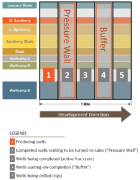
- Developing 2018 capital program to more closely align with forecasted cash flows.
- Plan on delivering mid-teens production growth.
- Outspend expected to be ~$100 million (EBITDA minus CAPEX).
- Detailed Tank-Style completion methodology:
- Complete multiple stacked horizons in top-down and left-right pattern.
- Highlighted the use of a Pressure Wall and Buffer in recent completions.
- Completed well (Pressure Wall) waiting to be PoP’d separates producing wells from wells being completed.
- DUC well (Buffer) is also used to minimize interference between completed and drilling wells.
- Days from spud to production is between 60-100 days utilizing tank style completions.
- 16 well density test utilizing tank development showing similar performance to 8 well non tank style test.
- Spraberry Shale well costs are ~$6 million (7,500’) which includes facilities and pumping unit ($800 thousand).
- Wolfcamp A and Wolfcamp B well costs are ~$7 million (7,500’) and ~$7.2 million (7,500’) respectively, includes facilities and pumping unit.
- Electing to reject ethane from produced wells for the entire year whenever possible.
- Services remain tight in the Midland Basin, but haven’t seen a material increase in costs to date.
- Outlined spacing assumptions across core Permian acreage.
- Company estimates that they have ~1,900 potential future locations utilizing 7,500’ and 10,000’ laterals.
- Exiting Woodford Shale project on Central Basin platform after evaluating 2nd well results targeting black oil.
- Performing two density pilot tests within one section on Central Martin County acreage (Mustang Springs area).
| Formation | West Pilot | East Pilot |
|---|---|---|
| Middle Spraberry | 10 wells per section | 6 wells per section |
| Spraberry Shale | 14 wells per section | 8 wells per section |
| Wolfcamp A | 4 wells per section | 7 wells per section |
| Wolfcamp B | 8 wells per section | 14 wells per section |
Resolute Energy
- Currently running 2 rigs and 1 frac crew.
- Permian production averaged 22,629 Boe/d.
- Drilled 7 and completed 8 wells during the quarter.
- Provided an update on drilling activity and completion activity.
Spud-to-TD times were ~16 days for a mid-length lateral and 23 days for a long lateral. 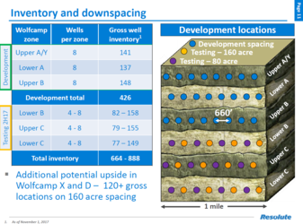
- Company estimates that they have ~426 gross (373 net) locations in the Wolfcamp A and Wolfcamp B.
- Began testing Wolfcamp Lower B and Wolfcamp C; potential to double inventory.
- Current development inventory count based on 8 wells per section.
- First Lower Wolfcamp B and Wolfcamp C wells flowing back.
- 4 additional Wolfcamp B and Wolfcamp C wells expected to be on production in the fourth quarter and first quarter 2018.
- 80-acre Wolfcamp C pair expected to be PoP’d in the second quarter of 2018.
- Lower Wolfcamp B and Wolfcamp C pad expected to be PoP’d in the fourth quarter of 2018.
Updated Wolfcamp A and Wolfcamp B economics.
| Formation | Lateral | EUR (Mboe) | Oil EUR | First Year Cum. (Mboe) | Well Costs (MM) | IRR |
|---|---|---|---|---|---|---|
| Wolfcamp A | Long | 2,329 | 1,265 | 639 | $9.7 | ~120% |
| Wolfcamp A | Mid-Length | 1,827 | 738 | 401 | $8.4 | ~57% |
| Wolfcamp B | Mid-Length | 1,904 | 576 | 442 | $8.4 | ~50% |
Price Deck: $55 WTI and $3.00 Mcf
- Current completion design utilizing ~1,800 lbs/ft and ~1,680 gals/ft
- Stages spaced at ~15’ apart with 15 clusters per stage.
- At year end, ~90% of Reeves County acreage will be HBP’d.
- Hedged ~50% of 2018 oil production based on anticipated 2017 exit rate.
- Closed Aneth field assets to become pure play Delaware Basin operator with ~21,100 net acres.
RSP Permian
- Operated 7 rigs and 2 frac crews (Halliburton) during the third quarter.
- Plan on adding additional rig and completion crew in 2018.
- Production averaged 58,932 Boe/d, an increase of ~8% from the previous quarter.
- Drilled 26 and completed 22 wells.
- By year end, expect to have ~32-38 DUCS.
- Finalizing local sand contract by year end 2017.
- Regarding Tank Style completions, believe 4-5 wells at a time is optimal due to water and infrastructures issues.
- After wells have reached their IP, but before ESPs are taken out, company will drill additional 4-5 wells.
- “Instead of creating parent-child relationships, we just try to create sibling relationships.”
Midland Basin Results 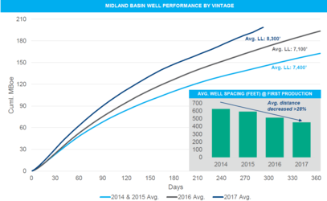
- Wells PoP’d in 2017 had an average lateral length of ~8,300’ and horizontally spaced at ~425’.
- At the 300 day mark, 2017 wells are outperforming 2016 wells by ~17%.
- Began simultaneously fracking two 2-well pads, which reduced downtime to offset producers and increased complexity/efficiency of stimulations.
- “We’ve observed a tangible benefit from this approach, and we’ll look to pair our frac crews where possible going forward.”
- Completed 6 wells with higher percentage of 100 mesh sand with “outstanding results.”
| Well | Formation | Lateral | IP30 Boe/d | % Oil |
|---|---|---|---|---|
| Spanish Trail 347 01 | WFMP A | 6,500 | 1,400 | 72% |
| Spanish Trail 347 02 | WFMP A | 6,500 | 1,850 | 82% |
| Woody 3-46 | WFMP B | 7,600 | 1,520 | 80% |
| Keystone 1007 | WFMP A | 9,800 | 2,220 | 90% |
| Keystone 1006 | LSPBY | 9,800 | 1,600 | 88% |
| Keystone 1007 | LSPBY | 9,750 | 1,270 | 85% |
- Spanish Trail 347 Wolfcamp A wells spaced at 8 wells per section were frac’d with 100% 100 mesh.
- After 75 days of production, wells have produced on average of 100,000 Boe.
- On the west side of the basin, the Wolfcamp A has been a suprise for the company.
- Experimenting with different landing zones within the formation.
- Implementing gas lift pilots in different areas and reservoirs.
- Results have been positive; plan on increasing usage which will lower LOE.
- Plans for 2018 include running 4 rigs on average, drilling almost entirely in full development mode.
- Begin Glass Ranch development in Martin County where company has higher NRIs (77%-80% NRI).
- Continue full field development on West Side area after positive step-out results in the Wolfcamp A.
Delaware Basin Results 
- Completed first 3rd Bone Spring on southern end of acreage.
- Rudd Draw 29 03 01H completed with a 4,400’ lateral and is currently producing ~1,822 Boe/d (73% oil), still cleaning up at >2,500 psi.
- Going forward, 3rd Bone Spring may need to be completed in tandem with the Wolfcamp A.
- Still in early stages of optimizing frac design.
- Evaluating cost/benefits of modified casing design.
- Had casing issues with wells drilled by previous operator.
- Mitigated issues by running tieback frac strings on subsequent well with similar casing design.
- Testing upsized casing on 3-well program.
- In 2018, plan on running 3 rigs minimum with a majority of drilling on multi-well pads.
- Previously ~40%, going forward ~85%.
- Dedicate 1 rig to Rudd Draw area; recent well results have been highly prolific.
- Rudd Draw 26 21 XY completed with a 6,700’ lateral has produced 450,000 Boe (73% oil) in 275 days.
- Main target will continue to be Wolfcamp A pending further results from Bone Spring and Wolfcamp B.
- Analyzing 3D seismic,
- Highlighted seismic data going West to East across acreage block, confirming CBP is East of company’s Winkler County acreage.
- Saw very little complexity in the Wolfcamp and Bone Spring across acreage.
- Eastern portion of acreage shows high quality rock with consistent presence of thick Wolfcamp and Bone Spring section.
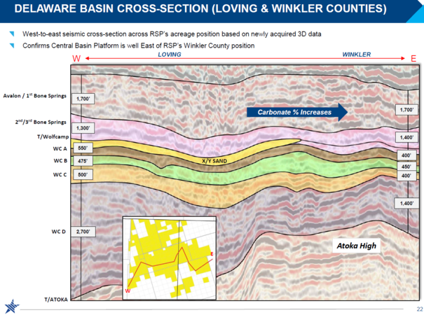
- “Initial acquisition had a minimal amount of locations, so anything good that happens in Winkler County will have a substantial uplift for us.”
- Corporate: Do not foresee paying a dividend with the amount of inventory on hand at high rates of return.
- Currently have ~48% of oil hedged at an average price of $46.68 based on 30% production growth in 2018.
SM Energy
- Currently running 7 rigs and 4 frac crews in the Midland Basin.
- Plan on adding additional rig by year end.
- Completed 23 wells during the quarter.
Announced results from 7 Wolfcamp As and 1 Wolfcamp B completion. Wolfcamp A wells were horizontally spaced at 420’. 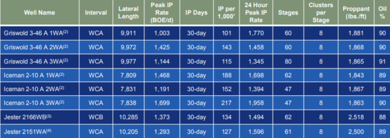
- Currently drilling at an average rate of 1,100’ per day, up ~14% from the second quarter.
Acquired ~5,000 net acres year-to-date, company now has ~89,000 net acres in the Midland Basin.
WPX Energy
- Averaged 7 rigs and 2 frac crews during the quarter.
- Plan on dropping 1 rig in the fourth quarter.
- Expect to exit 2017 with 20-25 DUCs.
- Announced results from Lindsay 10-15 6 well pad which was completed in the Wolfcamp A: 5 of the wells had 7,500’ laterals and achieved an IP30 average of 3,100 Boe/d (~54% oil).
- In 2018, about 75% of the wells will be 1.5 mile or 2 mile laterals. The average lateral length will be about 8,000’, which is 30% more than the average in 2017.
- Current frac design is ~2,500 lbs/ft.
- Focus in Delaware Basin will be first in State Line area, then in Central Reeves. Watching offset operators in Eddy County.
- See opportunity to divest non-core Delaware acreage in the near future.
- Primary target in 2018 will be the Upper and Lower Wolfcamp A; less variability in well design should increase efficiencies.
- Seeing some service cost inflation.
- Closed previously announced midstream agreement, received $349 million from Howard Energy.
- Signed PSA to sell San Juan Basin dry gas holdings for $169 million.